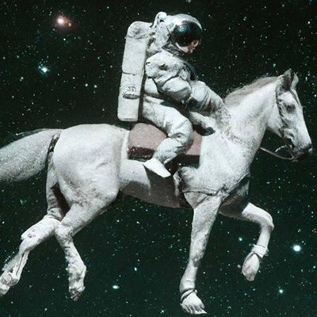
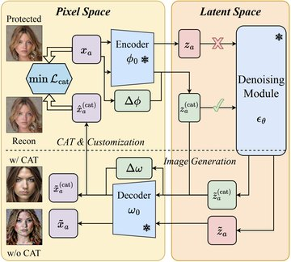
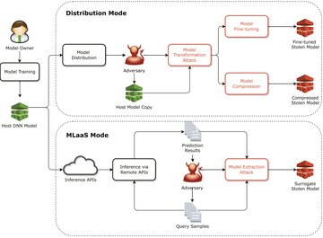
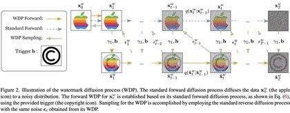

Sen Peng
I am an AI algorithm engineer at Unitree Robotics, focused on deploying advanced robot policies on real hardware. Previously, I received my B.E. from SUSTech and my Ph.D. from City University of Hong Kong, where I worked with Prof. Xiaohua Jia on AI security, with a focus on diffusion models.
Email / Google Scholar / GitHub / LinkedIn

Experience
Unitree Robotics, Hangzhou
Nov 2025 – Present
AI Algorithm Engineer, robot policy deployment.
Education
City University of Hong Kong
Sep 2020 – Oct 2025
Ph.D. in Computer Science, advised by Prof. Xiaohua Jia. Thesis: Attacks and Defense of Intellectual Property Protection in Diffusion Models.
National University of Singapore
Jun 2019 – Jul 2019
Summer Workshop, School of Computing.
Southern University of Science and Technology
Sep 2016 – Jun 2020
B.E. in Computer Science and Technology, advised by Prof. Xin Yao.
News
- Joined Unitree Robotics as an AI algorithm engineer.
- Defended my Ph.D. thesis at City University of Hong Kong.
- CAT accepted to ICML 2025.
- Paper on improving NMT fluency with LLMs accepted to MT Summit 2025.
- Survey on protective perturbations accepted to CBD 2024.
- WDM accepted to WISE 2024.
Publications

CAT: Contrastive Adversarial Training for Evaluating the Robustness of Protective Perturbations in Latent Diffusion Models
International Conference on Machine Learning (ICML), 2025
arXiv /
OpenReview /
code
Protective perturbations mainly work by distorting latent representations; lightweight contrastive adapters on the autoencoder largely neutralize them.
MT Summit 2025
Improve Fluency of Neural Machine Translation Using Large Language Models
Machine Translation Summit (MT Summit), 2025
paper

Protective Perturbations against Unauthorized Data Usage in Diffusion-based Image Generation
International Conference on Advanced Cloud and Big Data (CBD), 2024
arXiv
A survey and evaluation framework for protective perturbations in diffusion-based image generation.

Intellectual Property Protection of Diffusion Models via the Watermark Diffusion Process
International Conference on Web Information Systems Engineering (WISE), 2024
arXiv /
code
Embeds a watermark by training the model to learn a separate watermark diffusion process alongside its normal task.
arXiv 2024